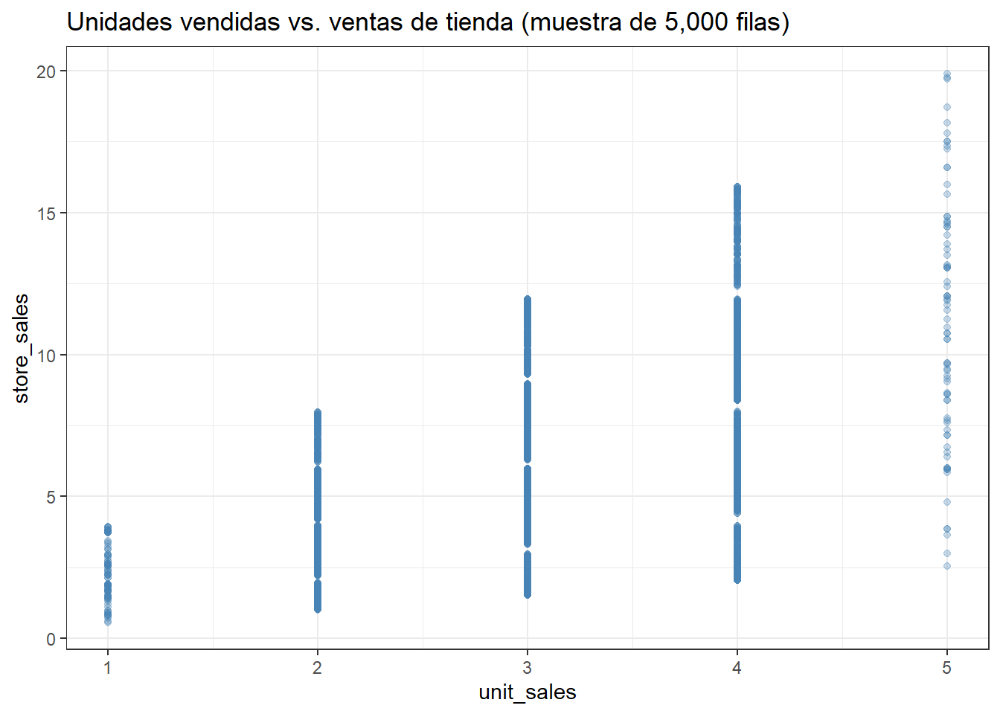
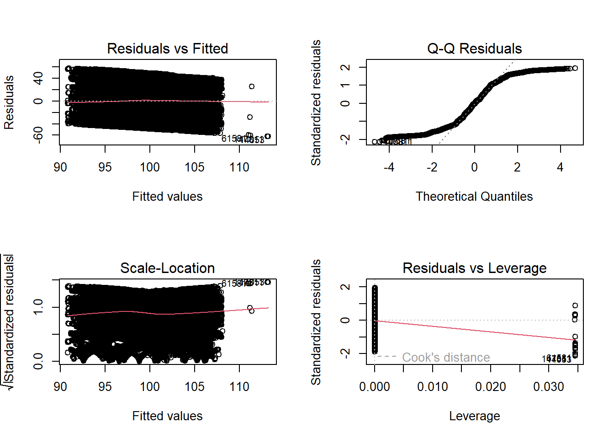

Capitulo 3 Correlación y regresión lineal: simple y múltiple
Este capítulo complementa las pruebas de hipótesis del Capítulo 2 con el análisis de la relación lineal entre variables numéricas del mismo dataset de campañas de mercadeo. Primero se cuantifica, con correlación y regresión lineal simple, la relación entre las dos variables de venta (unit_sales y store_sales). Luego, siguiendo el objetivo general del proyecto, se construye un modelo de regresión lineal múltiple que usa cost como variable respuesta y como predictoras las variables del perfil del hogar, del producto y de la tienda, para determinar cuáles de ellas contribuyen realmente a predecir el costo de la campaña.
3.1 Diagrama de dispersión
Con 360 mil filas, un scatterplot con todos los puntos es lento y poco legible, así que trabajamos con una muestra aleatoria solo para este gráfico.
set.seed(123)
data_muestra <- data %>% slice_sample(n = 5000)
ggplot(data_muestra, aes(x = `unit_sales(in millions)`,
y = `store_sales(in millions)`)) +
geom_point(alpha = 0.3, color = "steelblue") +
labs(title = "Unidades vendidas vs. ventas de tienda (muestra de 5,000 filas)",
x = "unit_sales", y = "store_sales") +
theme_bw()
Se observa una tendencia positiva entre unit_sales y store_sales: a medida que aumentan las unidades vendidas, las ventas en dinero por tienda también tienden a aumentar, aunque con bastante dispersión alrededor de esa tendencia.
3.2 Supuesto de normalidad
Con 360.336 observaciones, shapiro.test() no puede aplicarse directamente (límite de 5.000 datos), así que la normalidad se evalúa con Kolmogorov-Smirnov, igual que en el Capítulo 2.
## Warning in ks.test.default(scale(data$`unit_sales(in millions)`), "pnorm"):
## ties should not be present for the one-sample Kolmogorov-Smirnov test##
## Asymptotic one-sample Kolmogorov-Smirnov test
##
## data: scale(data$`unit_sales(in millions)`)
## D = 0.24457, p-value < 2.2e-16
## alternative hypothesis: two-sided## Warning in ks.test.default(scale(data$`store_sales(in millions)`), "pnorm"):
## ties should not be present for the one-sample Kolmogorov-Smirnov test##
## Asymptotic one-sample Kolmogorov-Smirnov test
##
## data: scale(data$`store_sales(in millions)`)
## D = 0.069532, p-value < 2.2e-16
## alternative hypothesis: two-sidedAmbas variables se alejan significativamente de la normalidad (p-valor < 2,2e-16 en los dos casos), tal como ha ocurrido con el resto de variables de este dataset. Esto no invalida el cálculo del coeficiente de Pearson, pero con un tamaño de muestra tan grande la prueba de significancia asociada es robusta por el Teorema Central del Límite.
3.3 Coeficiente de correlación de Pearson
x <- data$`unit_sales(in millions)`
y <- data$`store_sales(in millions)`
# Con la función cor()
cor(x, y, method = "pearson")## [1] 0.4813758##
## Pearson's product-moment correlation
##
## data: x and y
## t = 329.67, df = 360334, p-value < 2.2e-16
## alternative hypothesis: true correlation is not equal to 0
## 95 percent confidence interval:
## 0.4788633 0.4838803
## sample estimates:
## cor
## 0.4813758Se obtuvo un coeficiente de correlación de Pearson r = 0,4814 (t = 329,67, gl = 360.334, p-valor < 2,2e-16), lo que indica una correlación positiva de magnitud moderada entre unit_sales y store_sales. Se rechaza la hipótesis nula de correlación nula: existe una asociación lineal estadísticamente significativa entre ambas variables. A diferencia de la mayoría de pruebas del Capítulo 2, aquí la magnitud del coeficiente (r ≈ 0,48) también respalda que la relación es relevante en la práctica, y no solo estadísticamente significativa por el tamaño de muestra.
3.4 Regresión lineal simple
Dado que existe una correlación moderada y significativa, se ajusta un modelo de regresión lineal simple para cuantificar esa relación.
modelo_simple <- lm(`store_sales(in millions)` ~ `unit_sales(in millions)`, data = data)
summary(modelo_simple)##
## Call:
## lm(formula = `store_sales(in millions)` ~ `unit_sales(in millions)`,
## data = data)
##
## Residuals:
## Min 1Q Median 3Q Max
## -9.4570 -1.9883 -0.2796 1.9417 13.8917
##
## Coefficients:
## Estimate Std. Error t value Pr(>|t|)
## (Intercept) 0.160279 0.019350 8.283 <2e-16 ***
## `unit_sales(in millions)` 2.029349 0.006156 329.669 <2e-16 ***
## ---
## Signif. codes: 0 '***' 0.001 '**' 0.01 '*' 0.05 '.' 0.1 ' ' 1
##
## Residual standard error: 2.899 on 360334 degrees of freedom
## Multiple R-squared: 0.2317, Adjusted R-squared: 0.2317
## F-statistic: 1.087e+05 on 1 and 360334 DF, p-value: < 2.2e-16El modelo ajustado es store_sales = 0,1603 + 2,0293 × unit_sales. El coeficiente de unit_sales es positivo y significativo (p-valor < 2e-16): por cada unidad adicional vendida, las ventas de tienda aumentan en promedio 2,0293 millones. El R² del modelo es 0,2317 (coincide con r² = 0,4814² ≈ 0,2317, como debe ser en regresión lineal simple), es decir, unit_sales explica aproximadamente el 23,2% de la variabilidad de store_sales. Aunque el ajuste no es muy alto, es la relación más fuerte encontrada entre las variables numéricas continuas de este dataset.
3.5 Regresión lineal múltiple: modelo de predicción de cost
Siguiendo el objetivo general del proyecto, se construye ahora un modelo de regresión lineal múltiple que usa cost como variable respuesta (Y), y como predictoras un conjunto de variables del perfil del hogar, del producto y de la tienda (ver la operacionalización de variables en la introducción). Deliberadamente no se incluyen unit_sales ni store_sales como predictoras, porque el objetivo es predecir el costo a partir de las características del hogar/producto/tienda, no a partir de otras variables de venta.
library(tidyverse)
library(car) # para el diagnóstico de multicolinealidad (VIF)
library(kableExtra)3.5.1 Ajuste del modelo completo
modelo_multiple <- lm(cost ~ total_children + num_children_at_home +
`avg_cars_at home(approx).1` + gross_weight +
units_per_case + recyclable_package + low_fat +
store_sqft + coffee_bar + video_store +
salad_bar + prepared_food + florist,
data = data)
summary(modelo_multiple)##
## Call:
## lm(formula = cost ~ total_children + num_children_at_home + `avg_cars_at home(approx).1` +
## gross_weight + units_per_case + recyclable_package + low_fat +
## store_sqft + coffee_bar + video_store + salad_bar + prepared_food +
## florist, data = data)
##
## Residuals:
## Min 1Q Median 3Q Max
## -62.192 -26.449 0.097 26.051 57.669
##
## Coefficients:
## Estimate Std. Error t value Pr(>|t|)
## (Intercept) 1.102e+02 3.741e-01 294.447 < 2e-16 ***
## total_children -2.182e-01 3.558e-02 -6.135 8.55e-10 ***
## num_children_at_home -7.456e-02 4.379e-02 -1.703 0.0886 .
## `avg_cars_at home(approx).1` 7.690e-01 4.592e-02 16.747 < 2e-16 ***
## gross_weight -6.874e-04 1.073e-02 -0.064 0.9489
## units_per_case 1.065e-03 4.839e-03 0.220 0.8258
## recyclable_package -5.889e-02 9.993e-02 -0.589 0.5557
## low_fat -8.188e-02 1.054e-01 -0.777 0.4371
## store_sqft -3.051e-04 1.028e-05 -29.670 < 2e-16 ***
## coffee_bar 1.192e+00 1.326e-01 8.990 < 2e-16 ***
## video_store -5.177e+00 1.608e-01 -32.204 < 2e-16 ***
## salad_bar 6.670e+00 5.506e+00 1.211 0.2258
## prepared_food -6.080e+00 5.506e+00 -1.104 0.2695
## florist -5.040e+00 1.416e-01 -35.595 < 2e-16 ***
## ---
## Signif. codes: 0 '***' 0.001 '**' 0.01 '*' 0.05 '.' 0.1 ' ' 1
##
## Residual standard error: 29.65 on 360322 degrees of freedom
## Multiple R-squared: 0.0194, Adjusted R-squared: 0.01937
## F-statistic: 548.4 on 13 and 360322 DF, p-value: < 2.2e-16El modelo completo obtuvo un R² de 0,0194 y un R² ajustado de 0,01937 (prácticamente idénticos, como es de esperar con un tamaño de muestra tan grande): las 13 predictoras en conjunto explican apenas un 1,94% de la variabilidad de cost, un ajuste muy bajo. Aun así, la prueba F global es altamente significativa (F = 548,4; p-valor < 2,2e-16), lo que confirma que el modelo en su conjunto aporta algo más que el puro azar, aunque ese aporte sea pequeño.
De los 13 coeficientes, 6 resultaron estadísticamente significativos (p-valor < 0,05): total_children (-0,2182, p = 8,55e-10), avg_cars_at home(approx).1 (0,7690, p < 2e-16), store_sqft (-0,0003051, p < 2e-16), coffee_bar (1,192, p < 2e-16), video_store (-5,177, p < 2e-16) y florist (-5,040, p < 2e-16). num_children_at_home quedó en el límite (p = 0,0886, no significativo al 5% pero sí al 10%), y el resto (gross_weight, units_per_case, recyclable_package, low_fat, salad_bar, prepared_food) no resultaron significativos.
En cuanto al perfil del hogar, específicamente: total_children tiene signo negativo (cada hijo adicional se asocia con una reducción de apenas 0,22 en el costo predicho, manteniendo las demás variables constantes) y avg_cars_at home(approx).1 tiene signo positivo (cada auto adicional se asocia con un aumento de 0,77). Aunque ambos son estadísticamente significativos, sus magnitudes son muy pequeñas frente al rango real de cost (50,79 a 149,75), lo cual es coherente con lo encontrado en el Capítulo 2: la significancia estadística del perfil del hogar es, de nuevo, producto del enorme tamaño de muestra más que de un efecto grande en la práctica. Las variables con mayor magnitud de coeficiente son, en cambio, características de la tienda (video_store, florist, coffee_bar), aunque tampoco alcanzan para que el modelo tenga un buen ajuste global. En conjunto, esto confirma que, con las variables disponibles, el costo de la campaña es difícil de predecir linealmente: el perfil del hogar aporta señal estadísticamente detectable pero de magnitud mínima, y ni siquiera sumando las variables de producto y tienda se logra un R² considerable.
3.5.2 Diagnóstico de los supuestos del modelo (residuos)
Antes de confiar en los coeficientes e interpretarlos, hay que verificar si el modelo lineal es adecuado para estos datos: se revisan los supuestos de linealidad, homocedasticidad y normalidad de los residuos. Esto es especialmente importante aquí porque en el Capítulo 1 ya se había observado que cost tiene una distribución multimodal (varios picos, no una sola campana), lo cual puede ser señal de que una regresión lineal simple no sea la herramienta ideal para describir completamente su comportamiento.

Con la salida obtenida se observa lo siguiente en los 4 gráficos:
Residuals vs Fitted: los valores ajustados quedan concentrados en un rango muy estrecho (≈90 a 110), reflejo directo del R² tan bajo del modelo — predice casi siempre cerca del promedio general de cost (≈99,6), sin importar mucho el perfil del hogar, producto o tienda. Los residuos no se ven como una nube dispersa al azar, sino organizados en bandas diagonales densas, justo el patrón anticipado por la naturaleza multimodal de cost (cada banda corresponde a uno de los grupos de valores concentrados que forman esos “picos”). La línea roja se mantiene aproximadamente horizontal en 0, así que no hay una curvatura global fuerte, pero el patrón de bandas confirma que el modelo lineal no está capturando bien la estructura real de cost.
Q-Q Residuals: los puntos no siguen la diagonal, sino que forman una curva en forma de “S” marcada, separándose de la línea tanto en las colas como en el centro. Esto confirma que los residuos no son normales, consistente otra vez con la distribución multimodal de cost encontrada en el Capítulo 1: si la variable respuesta no tiene forma de campana, los residuos de un modelo lineal que intenta ajustarla con una sola línea recta tampoco la tendrán.
Scale-Location: la línea roja se mantiene bastante horizontal a lo largo de los valores ajustados, lo que sugiere que la dispersión de los residuos no cambia mucho — el supuesto de homocedasticidad se cumple razonablemente bien, a pesar del patrón de bandas visto antes.
DResiduals vs Leverage: la gran mayoría de las observaciones tiene un leverage muy bajo (concentrado entre 0,000 y 0,010), y ningún punto se sale de los contornos de distancia de Cook (no aparecen visibles en el gráfico), por lo que no hay observaciones con una influencia desproporcionada sobre el modelo.
En conjunto, el diagnóstico muestra que la homocedasticidad y la ausencia de puntos influyentes se cumplen razonablemente, pero la linealidad (patrón de bandas) y, sobre todo, la normalidad (curva en S del Q-Q) están claramente violadas. Esto es consecuencia directa de la naturaleza multimodal de cost identificada en el Capítulo 1, y es coherente con el R² tan bajo (0,0194) obtenido: el modelo de regresión lineal múltiple, aunque es la herramienta que pide este capítulo, tiene limitaciones reales para describir completamente el comportamiento de cost en este dataset — una conclusión metodológica válida en sí misma, no una falla del análisis.
3.5.3 Diagnóstico de multicolinealidad (VIF)
Antes de interpretar los coeficientes individualmente, se revisa si hay multicolinealidad entre las predictoras (coeficientes de variables correlacionadas entre sí pueden volverse inestables o difíciles de interpretar).
vif(modelo_multiple) %>%
as.data.frame() %>%
rownames_to_column("Variable") %>%
kbl(col.names = c("Variable", "VIF"), digits = 3,
caption = "Factor de inflación de la varianza (VIF) por predictora") %>%
kable_styling(bootstrap_options = c("striped", "hover", "condensed"), font_size = 12)| Variable | VIF |
|---|---|
| total_children | 1.150 |
| num_children_at_home | 1.160 |
avg_cars_at home(approx).1
|
1.016 |
| gross_weight | 1.005 |
| units_per_case | 1.001 |
| recyclable_package | 1.004 |
| low_fat | 1.003 |
| store_sqft | 1.544 |
| coffee_bar | 1.772 |
| video_store | 2.124 |
| salad_bar | 3106.886 |
| prepared_food | 3106.918 |
| florist | 2.055 |
De las 13 predictoras, 11 tienen un VIF cercano a 1 (entre 1,001 y 2,124), muy por debajo del umbral de preocupación (5-10), incluyendo las tres variables del perfil del hogar (total_children = 1,150; num_children_at_home = 1,160; avg_cars_at home(approx).1 = 1,016): no hay multicolinealidad relevante entre ellas. Sin embargo, salad_bar y prepared_food presentan un VIF extremadamente alto (3.106,886 y 3.106,918 respectivamente), muy por encima de cualquier umbral razonable — señal de multicolinealidad severa entre estas dos variables específicamente (es decir, una está casi determinada linealmente por la otra en este dataset). Esto explica por qué, en el modelo completo, ambas tenían coeficientes grandes pero no significativos (salad_bar = 6,670, prepared_food = -6,080, ambas con el mismo error estándar inusualmente alto de 5,506): cuando dos predictoras están tan correlacionadas entre sí, sus coeficientes individuales se vuelven inestables y no se pueden interpretar de forma confiable por separado. Antes de la selección de variables del siguiente paso, lo recomendable sería quitar una de las dos (por ejemplo, prepared_food) o combinarlas en una sola variable, ya que mantener ambas no aporta información adicional real al modelo.
3.5.4 Selección de variables (stepwise)
Se utiliza selección paso a paso (step(), basada en AIC) para obtener un modelo más parsimonioso, conservando solo las predictoras que realmente aportan al modelo.
##
## Call:
## lm(formula = cost ~ total_children + num_children_at_home + `avg_cars_at home(approx).1` +
## store_sqft + coffee_bar + video_store + salad_bar + florist,
## data = data)
##
## Residuals:
## Min 1Q Median 3Q Max
## -56.298 -26.471 0.112 26.061 57.745
##
## Coefficients:
## Estimate Std. Error t value Pr(>|t|)
## (Intercept) 1.101e+02 3.246e-01 339.208 < 2e-16 ***
## total_children -2.181e-01 3.558e-02 -6.132 8.71e-10 ***
## num_children_at_home -7.490e-02 4.378e-02 -1.711 0.087129 .
## `avg_cars_at home(approx).1` 7.688e-01 4.592e-02 16.743 < 2e-16 ***
## store_sqft -3.052e-04 1.028e-05 -29.683 < 2e-16 ***
## coffee_bar 1.192e+00 1.326e-01 8.986 < 2e-16 ***
## video_store -5.178e+00 1.608e-01 -32.208 < 2e-16 ***
## salad_bar 5.924e-01 1.640e-01 3.612 0.000304 ***
## florist -5.042e+00 1.416e-01 -35.607 < 2e-16 ***
## ---
## Signif. codes: 0 '***' 0.001 '**' 0.01 '*' 0.05 '.' 0.1 ' ' 1
##
## Residual standard error: 29.65 on 360327 degrees of freedom
## Multiple R-squared: 0.01939, Adjusted R-squared: 0.01937
## F-statistic: 890.8 on 8 and 360327 DF, p-value: < 2.2e-16El modelo stepwise eliminó 5 de las 13 predictoras originales (gross_weight, units_per_case, recyclable_package, low_fat y prepared_food), quedándose con 8: total_children, num_children_at_home, avg_cars_at home(approx).1, store_sqft, coffee_bar, video_store, salad_bar y florist. Es notable que prepared_food haya sido eliminada precisamente la variable que, junto con salad_bar, presentaba el problema severo de multicolinealidad (VIF > 3.100) — al quitarla, salad_bar pasó de no ser significativa (p = 0,2258 en el modelo completo) a serlo claramente (p = 0,000304), confirmando que su falta de significancia antes era un artefacto de la colinealidad, no una ausencia real de relación con cost. El R² ajustado del modelo reducido es 0,01937, prácticamente idéntico al del modelo completo (0,01937 también), es decir, se perdió cero poder explicativo al quitar 5 variables — el modelo reducido es preferible por ser más simple sin sacrificar ajuste. La ecuación final es: cost = 110,1 − 0,2181×total_children − 0,0749×num_children_at_home + 0,7688×avg_cars_at home − 0,0003052×store_sqft + 1,192×coffee_bar − 5,178×video_store + 0,5924×salad_bar − 5,042×florist.
3.5.5 Conclusión del modelo de predicción
Respondiendo al objetivo general del proyecto: el modelo de regresión lineal múltiple predice el costo de la campaña de forma muy limitada (R² ajustado ≈ 0,0194, es decir, solo el 1,94% de la variabilidad de cost es explicada por las variables disponibles). De las variables de perfil del hogar, total_children y avg_cars_at home resultaron estadísticamente significativas pero con magnitudes mínimas (-0,22 y +0,77 respectivamente, frente a un rango de cost de 50 a 150), mientras que num_children_at_home quedó en el límite de la significancia (p ≈ 0,087). Las predictoras más relevantes en magnitud fueron, en cambio, características de la tienda: video_store (-5,18) y florist (-5,04), seguidas de coffee_bar (+1,19) y salad_bar (+0,59). Esto es coherente con lo encontrado a lo largo de todo el proyecto: ya en el Capítulo 2 el perfil del hogar mostraba efectos negligibles sobre cost (eta cuadrado ≈ 0,001 en el ANOVA), y el diagnóstico de residuos de esta misma sección mostró que cost, por su naturaleza multimodal, no se ajusta bien a un modelo lineal. En conjunto, la conclusión es clara: con las variables disponibles en este dataset, el costo de la campaña de mercadeo es difícil de predecir linealmente — el perfil del hogar aporta señal estadísticamente detectable pero de magnitud mínima, y ni las variables de producto ni de tienda logran, en conjunto, un modelo con buen poder predictivo.